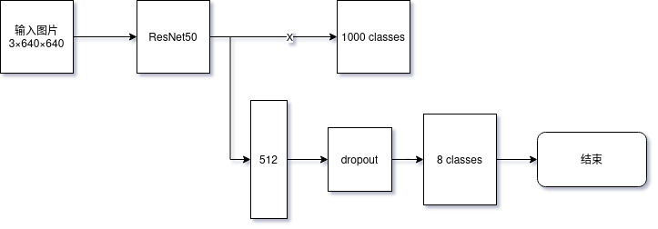

通过pytorch 理解RotNet（下）
通过迁移学习，可以利用别人预训练好的模型和权重来快速达到想要的效果。仍然以图片旋转角度学习为例。
定义数据集
因为在日本访问不了原作者提供的数据集。这里我们下载Google Street View-Kaggle。通过以下代码访问：
from PIL import Image
from torch.utils.data import DataLoader, Dataset
class RotResNetDS(Dataset):
"""
数据集代码结构与（上）基本一致，除了要从头读取图片
（似乎有无归一化没有太大影响）
"""
def __init__(self, img_dir="./imgs", fn_pattern="*.png"):
super().__init__()
self.imgs = list(Path(img_dir).expanduser().glob(fn_pattern))
self.to_tensor = transforms.ToTensor()
def __len__(self):
return len(self.imgs)
def __getitem__(self, index):
# 因为ResNet50 接收RGB 三通道的输入，所以不能转化为灰度图
img = Image.open(self.imgs[index]).convert("RGB")
angle = random.randint(0, 359)
img = torchvision.transforms.functional.rotate(img, angle)
img = self.to_tensor(img)
return img, angle//45
train_dataset = RotResNetDS()
train_loader = DataLoader(train_dataset, batch_size=64, shuffle=True, num_workers=8)
# 查看数据格式
img, angle = train_dataset[0]
print(f"\n单个样本:")
print(f"图片形状: {img.shape}")
print(f"标签（旋转n个45度）: {angle:.2f}")定义神经网络模型
通过借用现有的ResNet50,可以帮我们节省训练时间和资源。下面是神经网络的结构：

代码实现如下：
import torch
from torchvision import datasets, transforms, models
class RotResNet(torch.nn.Module):
def __init__(self,):
super().__init__()
# torch 中存在现成的ResNet50 网络，可以直接调用
# 代码运行时会自动下载
backbone = models.resnet50(
weights=models.ResNet50_Weights.IMAGENET1K_V1)
# 去掉最后一个全连接层
# 标准ResNet50 接收3通道和不小于227×227 的输入，输出为1000 各类别
# 因为其最后分类的部分不是我们需要的，但是之前的特征对我们比较有用
self.backbone = torch.nn.Sequential(*list(backbone.children())[:-1])
# torch.nn.Sequential，用于串联多个模块，省去了一些x=layer(x) 的代码
# 属于语法糖了，并行的话必须自己写forward：
# def forward(self, x):
# y1 = self.branch1(x)
# y2 = self.branch2(x)
# return torch.cat([y1, y2], dim=1)
self.head = torch.nn.Sequential(
torch.nn.Flatten(),
torch.nn.Linear(2048, 512),
torch.nn.ReLU(inplace=True), # 输入输出是同一块内存，节省空间
torch.nn.Dropout(0.25),
torch.nn.Linear(512, 8)
)
def forward(self, x):
# 封装后，前向过程变得非常简单
x = self.backbone(x)
x = self.head(x)
return x训练与验证
训练过程与（上）保持一致，这里简单贴下代码：
import torch
# 使用CUDA 初始化模型
device = torch.device('cuda' if torch.cuda.is_available() else 'cpu')
model = RotCNN().to(device)
# 多分类单标签的损失函数CrossEntropyLoss，已经包含了softmax
criterion = torch.nn.CrossEntropyLoss()
# 根据损失函数值更新模型的参数，一般用Adam
optimizer = torch.optim.Adam(model.parameters(), lr=0.001)
# 正向过程->损失函数->反相过程->更新参数
# 将模型切换到训练模式
model.train()
for epoch in range(5):
running_loss = 0.0
correct = 0
total = 0
for images, labels in train_loader:
images = images.to(device)
labels = labels.to(device)
# 前向传播
outputs = model(images) # [batch_size, num_classes]
loss = criterion(outputs, labels)
# 反向传播
optimizer.zero_grad()
loss.backward()
optimizer.step()
# 统计准确率
_, predicted = torch.max(outputs.data, 1)
total += labels.size(0)
correct += (predicted == labels).sum().item()
running_loss += loss.item()
accuracy = 100 * correct / total
avg_loss = running_loss / len(train_loader)
print(
f'Epoch [{epoch+1}/100], Loss: {avg_loss:.4f}, Accuracy: {accuracy:.2f}%')
# 保存模型
torch.save({
'model_state_dict': model.state_dict(),
'optimizer_state_dict': optimizer.state_dict(),
}, 'rot_resnet_model.pth')
print("\n模型已保存到 rot_resnet_model.pth")
checkpoint = torch.load('rot_resnet_model.pth', map_location=device)
model.load_state_dict(checkpoint['model_state_dict'])
model.eval()
test_dataset = RotResNetDS()
test_loader = DataLoader(test_dataset, batch_size=128,
shuffle=False, num_workers=2)
print("\n测试预测示例:")
model.eval()
with torch.no_grad():
for i in range(5):
img, true_angle = test_dataset[i]
img = img.unsqueeze(0).to(device)
outputs = model(img)
probabilities = torch.nn.functional.softmax(outputs, dim=1)
predicted_angle = torch.argmax(probabilities, dim=1).item()
confidence = probabilities[0, predicted_angle].item()
# 计算误差（考虑循环）
error = abs(predicted_angle - true_angle)
error = min(error, 360 - error)
print(f"样本 {i+1}: 真实={true_angle}, 预测={predicted_angle}, "
f"误差={error}, 置信度={confidence:.2%}")结果，在利用ResNet50 进行迁移学习的情况下，仅训练3～5个epochs 就能得到较好的效果，要比从头训练MNIST 还要快。
Epoch [1/100], Loss: 0.2383, Accuracy: 92.56%
Epoch [2/100], Loss: 0.0414, Accuracy: 98.74%
Epoch [3/100], Loss: 0.0349, Accuracy: 98.97%
Epoch [4/100], Loss: 0.0295, Accuracy: 99.24%
Epoch [5/100], Loss: 0.0170, Accuracy: 99.54%因此，在设计神经网络模型时，可以广泛参考既有的项目，可能能达到事半功倍的效果。